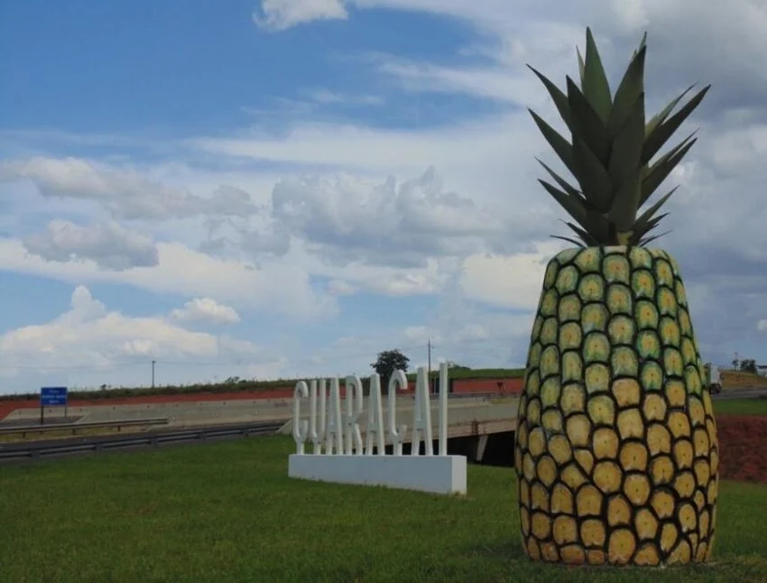

Onde fica
No noroeste paulista, em cidades como Andradina, Castilho, Ilha Solteira, Itapura, Pereira Barreto, Sud Mennucci e Suzanápolis. A Região Turística reúne cerca de 215 mil habitantes (estimativa de 2021).
Região Turística Pantanal Paulista
Descubra destinos, experiências e paisagens que tornam o Pantanal Paulista único.
O Pantanal Paulista é uma região do extremo noroeste do Estado de São Paulo, na divisa com Mato Grosso do Sul, formada pelos encontros dos rios Tietê, Paraná, Aguapeí e São José dos Dourados. Ali, as grandes represas e as áreas alagadas lembram o Pantanal original, e daí vem o nome. Ele não faz parte oficialmente do bioma Pantanal, mas divide com ele rios, várzeas e uma fauna riquíssima.
Reunimos neste site as cidades que integram essa rota, com suas histórias, atrações e dicas de como chegar. A região fica a pelo menos 650 km da capital paulista e ainda é pouco conhecida pelos próprios paulistas: aqui o Tietê chega limpo, com praias de água doce, pesca esportiva, ecoturismo e muita natureza preservada.
No noroeste paulista, em cidades como Andradina, Castilho, Ilha Solteira, Itapura, Pereira Barreto, Sud Mennucci e Suzanápolis. A Região Turística reúne cerca de 215 mil habitantes (estimativa de 2021).
Os reservatórios de Jupiá, Ilha Solteira e Três Irmãos, criados pelas usinas do Complexo de Urubupungá, formaram praias fluviais, canais e planícies inundáveis, como a foz do Tietê, em Itapura.
O Parque Estadual do Aguapeí e a RPPN Foz do Rio Aguapeí somam cerca de 23 mil hectares e abrigam um dos últimos refúgios do cervo-do-pantanal no Estado, além de aves, capivaras e jacarés.
Pesca esportiva (principalmente o tucunaré), mergulho, passeios de barco, festas de peão, herança da imigração japonesa e uma história ligada à ferrovia, às usinas e ao Brasil Império.

Terra do Rei do Gado, banhada pelo Rio Tietê. Turismo religioso, romarias e parque aquático.
Saiba mais
Porta de entrada do Pantanal Paulista e Paraíso do Pescador, com rios e o varjão.
Saiba mais
Terra do Abacaxi, integra a rota do Pantanal Paulista, com natureza e a tranquilidade do interior.
Saiba mais
Estância Turística e paraíso dos esportes aquáticos, com a usina hidrelétrica.
Saiba maisIgreja de São João Batista, com vitrais e ladrilhos, e a comunidade Yuba de cultura japonesa.
Saiba maisPequena cidade da rota do Pantanal Paulista, ideal para descansar em meio à natureza.
Saiba mais
Turismo rural e contato com a natureza no coração da região do Pantanal Paulista.
Saiba mais
Trilhas de moto, cultura oriental e a Praça Matriz com fonte luminosa e castelo bonsai.
Saiba maisAndradina é a cidade-polo do extremo noroeste paulista e leva o título de Terra do Rei do Gado. Sua fundação foi idealizada em 1932 pelo fazendeiro Antônio Joaquim de Moura Andrade, o “Rei do Gado”, maior criador de gado do Brasil e nome que a cidade carrega até hoje. Fundada em 11 de julho de 1937 e transformada em município em 1938, é banhada ao norte pelo Rio Tietê e reúne turismo de negócios, turismo religioso (festas e romarias), cultura e lazer em família.
Andradina fica a cerca de 630 km da capital paulista, no entroncamento da Rodovia Marechal Rondon (SP-300) com a Rodovia Euclides de Oliveira Figueiredo (SP-563). A cidade também tem aeroporto estadual (Paulino Ribeiro de Andrade) e é a principal referência para quem visita as cidades vizinhas do Pantanal Paulista.
Conhecida como o Paraíso do Pescador e a porta de entrada do Pantanal Paulista, Castilho fica às margens do Rio Paraná, na divisa com Mato Grosso do Sul, e é banhada também pelos rios Tietê e Aguapeí, uma das maiores extensões de águas interiores do país. Emancipada de Andradina em 1953, tem mais de 500 ranchos de pesca e recebe pescadores de todo o Brasil, principalmente atrás do tucunaré, além de quem busca ecoturismo, passeios de barco e a observação da fauna e da flora pantaneiras.
Castilho fica no extremo noroeste paulista, ao lado de Andradina (de onde se emancipou), na margem do Rio Paraná em frente a Três Lagoas (MS), com pontes que ligam os dois estados. A região do Pantanal Paulista está a pelo menos 650 km da capital, então vale planejar a viagem com calma e aproveitar o fim de semana inteiro.
Guaraçaí, nome que vem do tupi coaracy (“sol”), é a Capital do Abacaxi do Estado de São Paulo e também é chamada de Cidade Presépio. A região foi ocupada a partir de 1925, na Fazenda João Machado, e se desenvolveu com a chegada da Estrada de Ferro Noroeste do Brasil, em 1936. Virou município em 1948 e hoje une a tradição da fruticultura (abacaxi e polpa de frutas) ao turismo rural, à natureza e ao ritmo tranquilo do interior.
Guaraçaí fica na microrregião de Andradina e faz divisa com Andradina, Junqueirópolis, Mirandópolis, Murutinga do Sul, Nova Independência e Pereira Barreto. Para chegar, a referência regional é Andradina, a cerca de 630 km de São Paulo pela Rodovia Marechal Rondon (SP-300).
Ilha Solteira é uma das poucas cidades planejadas do Brasil: nasceu para abrigar os trabalhadores da Usina Hidrelétrica de Ilha Solteira, cujas obras começaram em 1965, e ganhou o nome de uma ilha localizada logo abaixo da barragem. Hoje é Estância Turística e conhecida como Capital da Cultura. Cercada pelos rios Paraná, Tietê e São José dos Dourados, tem praias artificiais, pesca esportiva, esportes náuticos e um calendário cheio de festas e festivais.
Ilha Solteira fica a cerca de 661 km da capital, na divisa com Mato Grosso do Sul. Saindo de São Paulo, o caminho passa pela Rodovia dos Bandeirantes (SP-348) e pela Rodovia Washington Luís (SP-310), que muda de nome ao longo do trajeto.
É em Itapura que o Rio Tietê termina, encontrando o Rio Paraná. A cidade nasceu em 1858 como Colônia Militar, criada pelo Império para proteger a fronteira durante a Guerra do Paraguai, junto aos saltos de Itapura (“salto das pedras”) e Urubupungá, hoje cobertos pela represa de Jupiá. A antiga vila foi refeita em um ponto mais alto e, hoje, Itapura atrai pescadores, mergulhadores e quem gosta de natureza: águas limpas, cachoeiras e aves como tucanos, araras e garças.
Itapura fica a cerca de 670 km da capital, na divisa com Mato Grosso do Sul, no encontro dos rios Tietê e Paraná. É um dos destinos do Pantanal Paulista mais ligados à pesca esportiva, ao mergulho e à história do Brasil Império.
Mirandópolis surgiu por volta de 1920, com o avanço da Estrada de Ferro Noroeste do Brasil, foi emancipada em 1944 e instalada como município em 1º de janeiro de 1945. Tem como cartão-postal a Igreja de São João Batista, considerada um dos mais belos templos católicos do interior paulista, e abriga uma forte colônia japonesa, representada pela comunidade Yuba, que mantém viva a cultura oriental na cidade.
Mirandópolis fica a aproximadamente 600 km da capital paulista e é a segunda maior cidade da Região Turística Pantanal Paulista, o que a torna um bom ponto de apoio para conhecer as cidades vizinhas.
Pequena e acolhedora, Murutinga do Sul nasceu em 1937, quando Pedro Storti, vindo de Araçatuba, fundou um povoado na região; no mesmo ano chegou a estação da Estrada de Ferro Noroeste do Brasil. Foi distrito de Andradina com o nome de Algodoal e se emancipou em 30 de dezembro de 1953. O nome vem do tupi “moritinga” (“muito branco”), e o “do Sul” serve para diferenciá-la de uma cidade homônima no Amazonas. As tradições sertanejas são o grande destaque.
Murutinga do Sul fica a cerca de 628 km da capital, na região de Andradina, e é vizinha de Guaraçaí. O melhor período para conhecer a cidade é durante a Festa do Peão, em maio, mês do aniversário do município (1º de maio).
A povoação de Nova Independência nasceu de uma pousada de boiadeiros na beira da estrada, e o reconhecido fundador é João Theodoro Batista. Virou distrito de Andradina em 1948 e município em 1964. Hoje é conhecida por abrigar a sede do Parque Estadual do Aguapeí, parte do Pantanal Paulista e um dos últimos lugares do Estado onde o cervo-do-pantanal ainda vive em liberdade, perfeito para quem busca natureza, turismo rural e tranquilidade.
O Parque Estadual do Aguapeí fica na Rodovia General Euclides de Oliveira Figueiredo, km 161, na zona rural de Nova Independência. Como a região é de natureza preservada e há poucas estruturas turísticas, vale se informar antes sobre horários e condições de visita.
Pereira Barreto é um marco da imigração japonesa no Brasil. Fundada em 11 de agosto de 1928 com o nome de Novo Oriente, quando a Sociedade Colonizadora do Brasil adquiriu parte das terras, tornou-se município em 1938 e recebeu o nome do médico e cientista Luiz Pereira Barreto. Hoje é Estância Turística, banhada pelo Rio Tietê no reservatório da Usina de Três Irmãos, e famosa pela pesca ao tucunaré e pela Festa das Nações.
Pereira Barreto fica a cerca de 621 km da capital, no extremo noroeste paulista, na divisa com Mato Grosso do Sul. É uma das cidades mais estruturadas da região para receber visitantes e um bom ponto de partida para conhecer Ilha Solteira, Sud Mennucci e Suzanápolis.
Sud Mennucci é uma cidade tranquila às margens do Rio Tietê, que ali tem cerca de 30 km dentro do município e chega com águas limpas, repletas de peixes como tucunaré, corvina, pacu e piau. Nasceu como o povoado de Bacuri, ligado a Pereira Barreto, virou distrito em 1948 e município em 1959 (instalado em 1960). Faz parte da Região Turística Pantanal Paulista, é um paraíso para a pesca esportiva e de lazer e tem um pôr do sol de impressionar nas margens do Tietê.
Sud Mennucci fica a cerca de 620 km da capital paulista, a 176 km de São José do Rio Preto, 121 km de Araçatuba e 113 km de Três Lagoas (MS). Faz divisa com Pereira Barreto e Suzanápolis.
Suzanápolis é um dos municípios mais novos da região. O patrimônio Santo Antônio d’Oeste virou distrito de Pereira Barreto em 1964, passou a se chamar Suzanápolis em 1970, em homenagem a Herna (Susana) Schmidt, esposa do coronel Ernesto Schmidt, e foi emancipado em 1991. A cidade tem 14 córregos de águas de excelente qualidade e o Rio São José dos Dourados, com corredeiras, o que a torna ótima para turismo de pesca, ecoturismo, turismo rural e cultural.
Suzanápolis fica na região noroeste do Estado, vizinha de Pereira Barreto e Sud Mennucci, que formam um bom roteiro de fim de semana pelo Pantanal Paulista (a região fica a pelo menos 650 km da capital).
Valparaíso foi fundada em 1927 por pioneiros que viram na região, abrigada em um vale, um verdadeiro “paraíso”: daí o nome. A Estação Ferroviária foi inaugurada em 1932 e o município foi criado em 1937. Hoje é um dos maiores municípios da região, conhecido pela tradicional Festa do Peão de Boiadeiro, pelas trilhas para motos e pela cultura oriental presente na cidade, e tem aniversário em 30 de maio.
Valparaíso fica a aproximadamente 560 km da capital paulista e é cortada pela Rodovia Plácido Rocha (SP-541), que a liga a Adamantina. A cidade integra as regiões da Alta Paulista e do Noroeste do Estado.